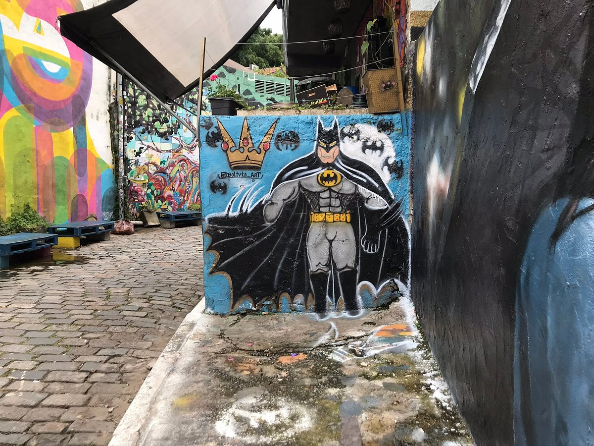
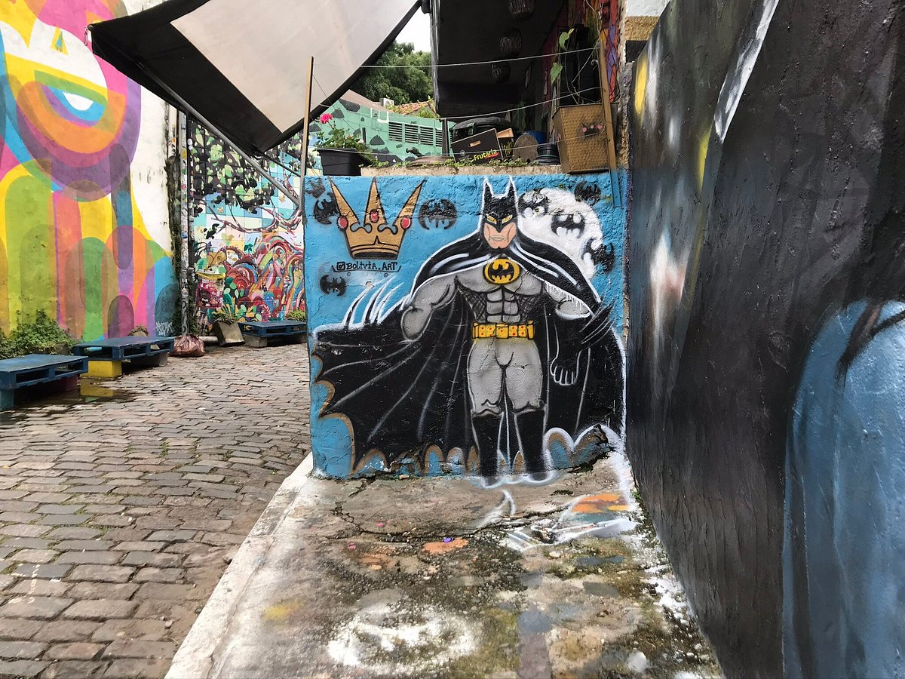

Centro de memória do Corpo de Bombeiros
O Centro de Memória do Corpo de Bombeiros de São Paulo é um lugar interessante, não é muito grande, mas tem algumas curiosidades, principalmente para levar crianças que gostam e admiram o trabalho dos Bombeiros. Foi inaugurado em 2005 para tentar preservar a história da corporação. Já nos muros do lado de fora, tem algumas pinturas e histórias dos grandes incêndios ocorridos na cidade, dentro, juntamente com o quartel da Vila Mariana, tem um prédio antigo, muito bem conservado que abriga materiais, fotos, documentos e equipamentos que descrevem a história da instituição e a evolução dos equipamentos de combate a incêndio. O carro, ou melhor, carroça, dos bombeiros que era usado há mais de 100 anos atrás, com um barril de água atrás, o escafandro e as pesadas botas usadas para mergulho. Tem também uma sala com as mudanças de uniformes utilizados pelos soldados e uma sala com painéis contando toda a história. O lugar aceita excursão de escolas com hora marcada, mas qualquer pessoa pode chegar e na portaria pedir permissão ao soldado e entrar para a visita. Lá dentro às vezes aparece um soldado e lhe dá as boas-vindas e lhe deixa à vontade para ler e apreciar algumas relíquias. A entrada é grátis e fica aberto de segunda à quinta- feira, das 8h às 19h. .

 

Programação
Seg a Sab, 8h - 12h / 14h - 18h
Local
Rua Domingos de Morais - 2329, Vila Mariana.